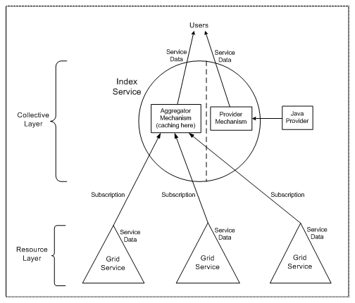

MDS, the Monitoring and Discovery Service, has been a major component of the Globus Toolkit since its inception.
With GT3, MDS changes in fundamental ways, but Information Services still remain a key part of the toolkit. Some MDS functionality is subsumed by the OGSI core framework, some information sources are merged with domain-specific resource-layer services, and some of MDS manifests as higher-level services, such as a collective-layer Index Service similar to an MDS2 GIIS.
The OGSI core in GT3 provides a generic interface for mapping Service Data queries and subscriptions for Service Data notification to service implementation mechanisms. In essence, this subsumes the role of the GRIS backend server module in MDS, while relying on more basic OGSA binding mechanisms for secure access to the query interface in place of the GSI-enabled LDAP protocol. The OGSA subscription mechanism is an enhancement over the polling query model of MDS, comparable to an LDAP extension called “persistent query.”
The OGSI core Service Data query behavior is exposed as a set of optional, higher-level, programming APIs within the GT3 service development environment. A service implementation can use as much, or as little, of the generic data-handling behavior as the designer chooses.
GT3 base service implementations such as GRAM and RFT provide relevant Service Data. These Service Data sources within the base service implementations subsume the role of per-component information providers (such as the GRAM reporter) in MDS.
The base service implementations expose status information as well as probed, measured, or discovered platform information according to well-defined Service Data Descriptions in their Service Type WSDL. These Service Data Descriptions in the WSDL, used to standardize the information exchange between providers and consumers within specific service domains, subsume the role of MDS schema written in the RFC2252 LDAP schema format.
The Index Service components in GT3 provide the following features:
A generic framework for aggregation of Service Data
A specific instance of an Index Service representing multiple resources
To present the generic aggregation framework, the logical structure of the Index Service can be described by the following diagram:

The Resource Layer consists of one or more Grid Services that produce Service Data, which can be sent by subscription to an Aggregator mechanism in the Index Service (which is a Collective Layer service). All of the Services at the Resource Layer must be able to perform notifications per the OGSI standard.
While information received by the Index Service is represented externally as Service Data in typical OGSI fashion, the components at the Collective Layer represent Index Service enhancements to the standard OGSI behavior. There is typically one Index Service per Virtual Organization or resource site. When there is a large VO that consists of multiple large sites, then often each site will run its own Index Service that will index the various resources available at that site. Then each of those Index Services would be included in the VO’s Index Service.
Service Data is cached as part of the Aggregator mechanism. The Provider mechanism of the Index Service allows you to generate Service Data using Java-based or other executable information provider programs.
Users can access Service Data from the
Aggregator or Provider mechanisms through subscriptions,
ogsi-find-service-data
queries, or both.
In GT2, MDS provides the ability to:
acquire information about resources and publish them to an information service using a standard interchange format (Lightweight Directory Interchange Format, or LDIF);
maintain information in soft-state fashion using TTL data provided with incoming information;
deliver information in response to client queries using a standard protocol (the Lightweight Directory Access Protocol, or LDAP);
create a hierarchy of information indexes supporting client queries at all levels.
In MDS2, data is stored in an in-memory LDAP repository in native LDIF format. LDIF is also the format for data delivered to, and received from, MDS.
In GT3, data is received, stored, and delivered in XML format in any of several Service Data containers, including an XML database and an in-memory cache.
A standalone Index Service, or a hierarchy of them, can aggregate data in the MDS2 sense.
Host information is represented by default in the GLUE schema, by default using a scripted provider mechanism similar to that in MDS2.
As mentioned above, platform data normally originates from GLUE providers. In addition, because of the nature of Service Data in the OGSA model embodied by GT3, an Index Service is able to hold the Service Data of any Service Instance to which it has access. This means that in GT3, the Index Service monitors not only computer platforms but the Services running within the Grid as well.
MDS2 restricts clients to using the LDAP query language, which forces the clients to download a lot of information and do subsequent client-side processing to find the desired data.
MDS3 supports both simple and complex queries. The OGSA framework allows you to implement your own application- or domain-specific query types, in addition to XPath and query-by-name capabilities.